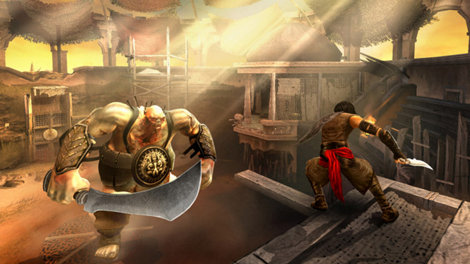

Prince of Persia: The Two Thrones is an action-adventure video game developed
and published by Ubisoft Montreal. It was released in December, 2005 in North
America for the Xbox, Microsoft Windows, PlayStation 2, and the Nintendo GameCube.
It was ported to the PlayStation Portable and Wii,[1] under the title Prince of Persia:
Rival Swords with the Wii version utilizing the motion-sensing functionality of its
controller, while the PSP version added exclusive content. A remastered, high-definition version
of The Two Thrones was released on the PlayStation Network for the PlayStation
3 on December 21, 2010.[2]
The game combines exploration and combat. Both elements make use of the Prince's
acrobatic capability and agility. Throughout much of the game, the player must
attempt to traverse the palace by running across walls, ascending or descending
chasms by jumping back and forth between walls, avoiding traps, climbing structures
and jumping from platform to platform, making other types of well-timed leaps,
solving puzzles and using discovered objects to progress